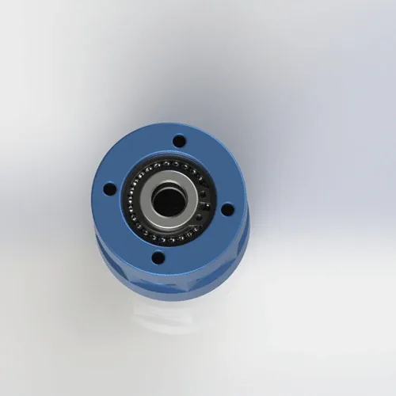
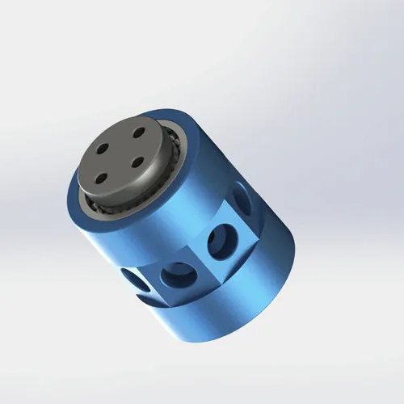

空気および適合確認済みの軽流体向け、G1/8接続の小型1入力6出力ロータリージョイント。φ4 mm流路、PTFE複合シール、AL6061ボディ、外形φ39 × 50 mm、約265 g。納期と流体適合性は案件ごとに回答します。
BP-1P-0006は、1入力6出力の小型ロータリージョイントです。共通のφ4 mm供給流路から6つの出力へ流体を分配します。軽量アルミニウムボディは小型回転台に適しますが、すべての出力は同じ供給圧力と流体を共有します。
| 型式 | BP-1P-0006 |
|---|---|
| 流路 | 1入力6出力（共通供給） |
| オリフィスのサイズ | 4 mm |
| ねじタイプ | G1/8 (BSPP) |
| ロータ側接続口 | 回転側：4 × M4 |
| ステータ側接続口 | 固定側：4 × M4 |
| 取付方法 | G1/8 ねじ式 |
| 最高使用圧力 | 1 MPa (10 bar/145 psi) —連続的な水使用条件のための0.7 MPaに定格を下げる |
| 最高回転数 | 300 min⁻¹ — 200 min⁻¹ に連続した水かクーラントのための定格を下げる |
| 使用可能流体 | 空気、水、水溶性のクーラント、軽い油圧オイル |
| 許容漏れ量 | モデルによって指定される;順序の前にテスト条件を確かめてください。 |
| 本体材質 | AL6061アルミ合金 |
|---|---|
| シール方式 | PTFE複合シール |
| 軸受形式 | 深い溝の玉軸受 |
| 使用温度範囲 | −20～+80°C |
| 製品質量 | 約0.265 kg（265 g） |
| 外形寸法 | φ39 × 50 mm |
| 無負荷トルク | ≤0.15 N・m |
| 保証条件 | 見積書・注文書で確認 |
|---|
材料とシールの適合性は仕様ごとに異なります。注文前に、承認図面、正確な本体合金、シール材質、流体、圧力、回転数、温度、デューティ、使用環境を確認してください。この概要は、あらゆる薬品への適合、規制適合、または寿命を保証するものではありません。
BP-1P-0006は、回転台上の複数機器へ1つの供給を分配する用途向けです。流量、圧力損失、流体、圧力、回転数、温度、取付、配管が実機条件に合うか確認してください。
適切な取付けは、シールや軸受の早期摩耗を抑えるうえで重要です。運転開始前に、取付け、芯出し、接続、および承認された使用限界を確認してください。
BP-1P-0006はG1/8 BSPP接続と、回転側・固定側のM4取付穴を使用します。接続方式、穴配置、設置スペース、公差は最新2D図面で確認してください。異なるねじやアダプタは技術確認後に使用します。
G1/8接続には適切なシール材のみ使用してください。過剰なシールテープや締付けはアルミニウムボディに負荷を与えます。承認された取付手順に従い、低圧で漏れを確認してください。
M4穴を使用して本体を確実に固定し、回り止めを行います。固定側本体をシャフトと一緒に回転させず、ホースは引張りやねじりが加わらないように配管してください。締付けと許容荷重は図面で確認します。
固定側には柔軟なホースを使用し、引張り、曲げ、ねじり荷重を本体へ伝えないでください。ろ過は流体と要求清浄度に応じて選定します。配管長をそろえることは分配の均一化に役立ちますが、流量計算の代わりにはなりません。
負荷なしで5分間低圧(0.2 MPa)と低速(50–100 min⁻¹)で実行します。 このベッドはPTFE シールをシャフトの表面に置き、マイクロ滑らかな接触の地帯を作成します。 ねじ および シール インターフェイスの漏出のために点検してください。 乾いたら、徐々に作動圧力と速度を10分以内に増加させます。 ランニングインをスキップする 初期のシール失敗の2つの原因です — シールはシャフトの表面の終わりに合わせる時間を必要とします。
最新の2D図面に、承認済み寸法、公差、ねじ、穴配置を記載しています。設計と発注には必ず最新版をご使用ください。
STEP／IGESデータは、用途条件と選定仕様を確認したうえで、対象案件に提供できる場合があります。対応形式と提供時期は案件ごとに確認します。
完全なガイド: 糸の一致、トルクの指定、反回転、ろ過、操業手順および維持のチェックリスト。 650 KB. リリース
検査内容および提供可能な記録は、型式・注文ごとに確認します。
BP-1P-0006が適切か迷う場合は、独立入力数、取付方式、使用限界を比較し、別機種が必要になる条件を確認してください。
| ご使用条件 | BP-1P-0006適合チェック | 推奨代替機種 | 仕様変更が必要な場合 |
|---|---|---|---|
| 空圧1系統で6つの機器へ供給、軽量性を重視 | ✅ パーフェクト — 265 g AL6061 | — | — |
| 空圧1系統、固定式分配器、剛性を重視 | ✓ 外径φ39 mmの小型設計 | — | — |
| 出力ごとの独立圧力制御が必要 | ✕ すべての出力が1つの入力を共有 | BP-2P-0001 | クランプ／アンクランプ用の独立シール2流路 |
| 圧力 >1.0 MPa | ❌ 許容圧力範囲外です | 技術確認 | 2流路の代替機種。許容圧力は図面を確認 |
| 粉塵・研磨性異物が多い環境（製鉄所、鋳造設備など） | ・・・防塵なし | BP-2P-50-0001 | 保護カバー・ラビリンス構造。認証済みIP保護等級は表示していません |
| 連続的な水液浸 | ⚠️ 腐食のリスク | ステンレス鋼の版 | 受動態の304か316のステンレス鋼ボディ |
これは選定または取付上のリスクを説明する例であり、実際の顧客設備における故障時期を示すものではありません。運転開始前に、承認仕様の流路数、圧力、回転数、流体、接続、芯出し、取付指示を確認してください。
BP-1P-0006は回転式分配器であり、圧力調整器ではありません。6つの出力は1つの入力を共有するため、出力側に絞りを設けても完全に独立した圧力回路にはならず、相互干渉が生じます。選定の原則：個別制御が必要な機能には、複数の独立入力を備えた機種を使用してください。
これは選定または取付上のリスクを説明する例であり、実際の顧客設備における故障時期を示すものではありません。運転開始前に、承認仕様の流路数、圧力、回転数、流体、接続、芯出し、取付指示を確認してください。
BP-1P-0006とあわせて検討される機種、および共通1入力では不足する場合の代替機種です。
標準版はAL6061のアルミ合金ボディをPTFEの合成物シールのライト級選手および防蝕操作のために使用します。 検査内容および提供可能な記録は、型式・注文ごとに確認します。 国内および輸出の指定は包装および文書の言語だけ–プロダクト自体同一です参照します。 素材のフルスチールボディのオプションまたはカスタム素材については、技術チームにお問い合わせください。
水、水溶性クーラント、油で使用する場合は、組成、温度、圧力、回転数、デューティ比の確認が必要です。アルマイト処理AL6061は、連続浸漬や強い薬品洗浄へ自動的に適合するものではありません。純水や腐食性流体は材質とシールをご相談ください。
G1/8平行ねじは、指定されたシール面またはシール部品で密封します。M4穴は固定と回り止めに使用します。正確なねじ、穴配置、公差は最新図面を優先してください。
STEP／IGESデータは、用途条件と選定仕様を確認したうえで、対象案件に提供できる場合があります。対応形式と提供時期は案件ごとに確認します。
必要な流路数、圧力、回転数、中空径、取付方法、流体、環境保護が本型式の公開範囲を外れる場合は、別仕様を検討してください。最終型式、特注範囲、価格、納期は技術確認後に回答します。
技術注記： 公開されている使用限界は、最新の製品ページおよび承認図面で確認してください。生産検査は、使用定格の妥当性確認とは別のものです。実際の性能は、運転条件、使用流体の品質、取付方法および保守周期によって異なります。高圧油圧、水中での連続使用、食品用途、クリーンルーム環境など、標準定格外の用途については、仕様決定前にBegapunkの技術部門へご相談ください。最終更新：2026年6月11日